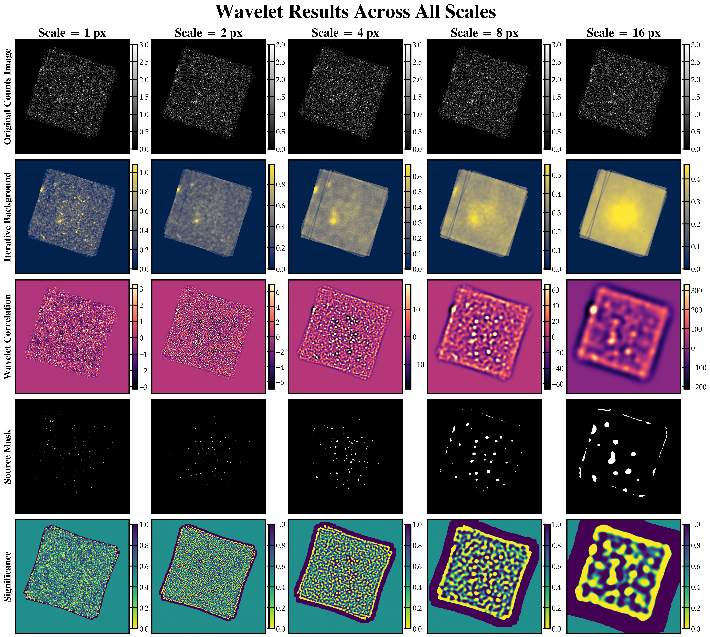
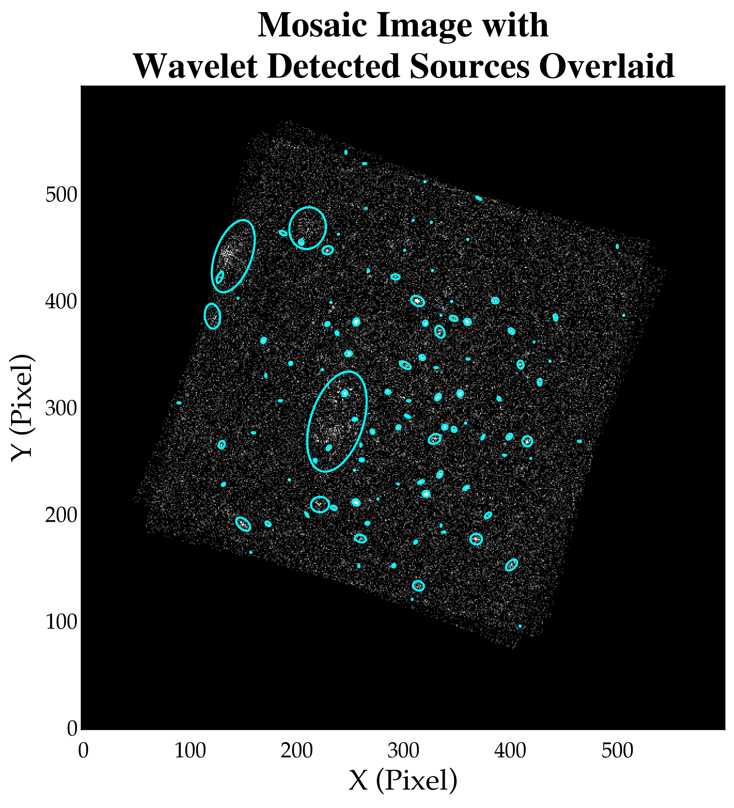
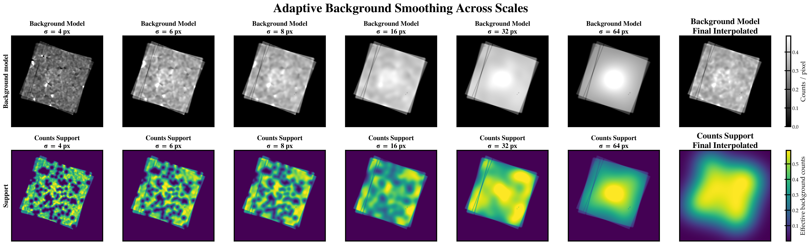
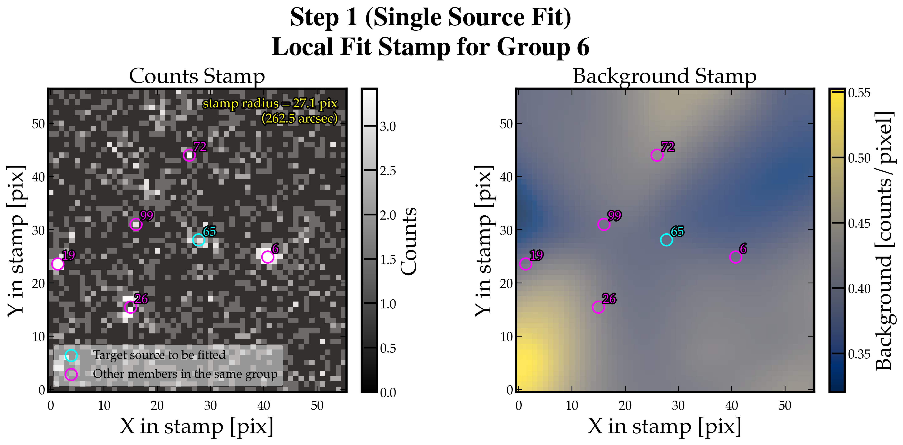
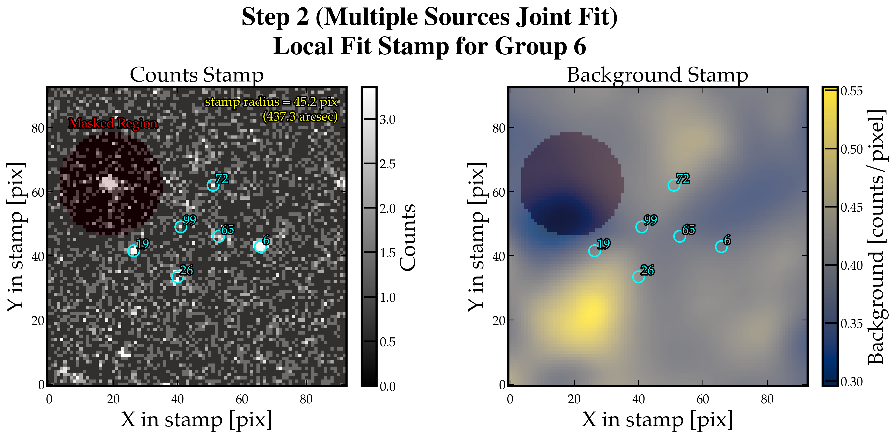

fxtsrcdet#
What It Does#
fxtsrcdet is a source detection task in eFXTDAS, inheriting features from CIAO’s wavdetect and eSASS’s ermldet.
It performs:
multi-scale Mexican-hat wavelet detection on a counts image
iterative local background estimation for each wavelet scale
cross-scale merging of provisional detections
exposure-aware background-map construction
PSF-aware single-source and grouped-source fitting
point-versus-extended source classification
final catalog writing to FITS
DS9 region export in image and sky coordinates
The implementation draws inspiration from CIAO wavdetect on the initial detection side and eSASS ermldet / erbackmap concepts on the source fitting and catalog side.
Basic Usage#
Command-Line Usage#
fxtsrcdet img.fits \
--expmap expmap.fits \
--eefmap eef_maps.fits \
--mission ep-fxt \
--instrument fxta \
--filter open \
--emin 0.3 \
--emax 10.0 \
--out sources.fits \
--regfile sources.reg \
--sky-regfile sources_fk5.reg
Python Usage#
from fxtsrcdet import PipelineConfig, fxtsrcdet_pipeline
cfg = PipelineConfig(
mission="ep-fxt",
instrument="fxta",
filter_name="open",
emin_keV=0.3,
emax_keV=10.0,
background_sigma_grid=(4, 8, 16, 32, 64),
)
result = fxtsrcdet_pipeline(
image="img.fits",
exposure="expmap.fits",
config=cfg,
)
rows = result["rows"]
background_map = result["background_map"]
per_scale = result["per_scale"]
Inputs#
required:
input counts image FITS
positional argument:
imagethis is the image on which wavelet detection, background estimation, and catalog fitting are performed
optional calibration / context inputs:
exposure map FITS:
--expmapused to define valid pixels and to make the background map exposure-aware
user-supplied analysis mask FITS:
--masknon-zero pixels are treated as globally valid
this mask is applied consistently to detection, adaptive background estimation, PSF-aware fitting, and final
maskfracdiagnostics
precomputed multi-extension EEF-radius map from
fxteefmap:--eefmapwhen supplied,
fxtsrcdetuses this directly for PSF-aware aperture and morphology work
mission / instrument / filter / energy metadata:
--mission--instrument--filter--emin--emaxthese are used to construct the spatial PSF model if
--eefmapis not provided
adaptive background-model smoothing grid:
--background-sigma-gridGaussian smoothing scales in pixels available to the adaptive background model
default:
4,8,16,32,64values below the internal floor are promoted to
BACKGROUND_SIGMA_FLOOR_PIX = 4.0
optional optical-axis override:
--optaxis-x--optaxis-y
wavelet detection controls:
--scaleswavelet scales in pixels, for example
1,2,4,8,16
--sigthreshsignificance threshold for the wavelet detection stage
--bkgsigthreshsignificance threshold used when cleansing likely source pixels during per-scale background estimation
--maxitermaximum number of iterative background-cleansing passes per scale
--iterstopminimum fractional change needed to continue the cleansing iteration
--expthreshminimum relative exposure required for a pixel to be treated as valid
--ellsigmaellipse scaling factor used when converting wavelet detections into provisional image-plane source regions
final catalog / source-classification controls:
--min-det-likeminimum detection-likelihood threshold for keeping a source as non-background
--min-ext-likeminimum extent-likelihood threshold for classifying a source as extended
--ecfoptional energy-conversion factor for turning count rate into flux
output / debugging controls:
--outoutput source-catalog FITS file
--regfileoutput DS9 region file in image coordinates
--sky-regfileoptional DS9 region file in sky coordinates if the input image has celestial WCS
--save-maskoptional aggregate source-mask FITS file
--save-significanceoptional best-significance FITS map
--save-bkgmapoptional carved-and-smoothed background FITS map
--debug-columnskeep internal columns in the source table for debugging
--include-backgroundkeep rows classified as background in the output catalog
--no-prune-sourcesdisable nearby-source duplicate pruning
--log-level--log-file--no-progress
Environment Overrides for Internal Constants#
fxtsrcdet also supports package-scoped environment variables for overriding
internal constants defined in fxtsrcdet/config.py.
Examples:
export FXTSRCDET_BACKGROUND_CARVE_R90_FACTOR=1.0
export FXTSRCDET_BACKGROUND_CARVE_MIN_COUNTS=6
export FXTSRCDET_EXT_RC_GRID_BASE_PIX=0.5,2.0,4.0,8.0
Notes:
this applies only to internal tuning constants, not normal CLI arguments
explicit CLI or Python parameters still remain the main user-facing controls
tuple-valued constants use comma-separated syntax
invalid override values raise an error during import rather than being ignored
Outputs#
For a run such as:
fxtsrcdet img.fits \
--expmap expmap.fits \
--mask analysis_mask.fits \
--out sources.fits \
--regfile sources.reg \
--sky-regfile sources_fk5.reg \
--save-mask agg_mask.fits \
--save-significance best_sig.fits \
--save-bkgmap bkgmap.fits
the output tree is conceptually:
<working-directory>/
|-- img.fits
|-- expmap.fits
|-- analysis_mask.fits
|-- sources.fits
|-- sources.reg
|-- sources_fk5.reg
|-- agg_mask.fits
|-- best_sig.fits
|-- bkgmap.fits
|-- sources.log
If only the required outputs are requested, the minimal tree is:
<working-directory>/
|-- img.fits
|-- sources.fits
|-- sources.reg
|-- sources.log
The products mean:
sources.fitsfinal source catalog in FITS table form
one row per retained final source
includes source position, count/rate measurements, wavelet scale information, PSF-aware fitting results, and classification columns
sources.regDS9 region file in image coordinates
useful for overlaying detections directly on the input FITS image in detector/image pixel space
sources_fk5.regoptional DS9 region file in celestial coordinates
written only when
--sky-regfileis requested and the input image carries celestial WCS
agg_mask.fitsoptional aggregate source-support mask from the initial wavelet stage
useful for debugging how source-like support accumulates across scales
best_sig.fitsoptional best-significance map
stores the strongest wavelet significance behavior seen at each pixel across all scales
bkgmap.fitsoptional final carved-and-smoothed background map
this is the most useful intermediate diagnostic product for later aperture or spectral region work
sources.logCLI log file
by default this is written beside
sources.fitsas<out>.log
Internally, the Python API also returns a richer in-memory result dictionary:
result
|-- rows
|-- per_scale
|-- agg_mask
|-- best_sig
|-- background_map
|-- analysis_mask
|-- psf_context
|-- pixel_scale_arcsec
where:
rowsfinal clean source catalog rows
per_scaleone
ScaleResultper wavelet scale, containing per-scale background, correlation, and source-mask products
agg_maskaggregated source-support mask
best_sigbest significance map over all scales
background_mapfinal background model used by the fitting/classification stage
analysis_masknormalized user-supplied global validity mask, or
Noneif no mask was provided
psf_contextresolved mission/instrument/filter/energy PSF context
pixel_scale_arcsecinferred image pixel scale in arcsec/pixel
Visualization#
The return value from fxtsrcdet_pipeline() is intentionally rich enough for review work:
result["per_scale"]: background / correlation / source-mask results at each wavelet scaleresult["agg_mask"]: aggregate source-support maskresult["best_sig"]: smallest significance over all scalesresult["background_map"]: final exposure-aware background map
Example:
import matplotlib.pyplot as plt
scale_result = result["per_scale"][2]
fig, ax = plt.subplots(1, 3, figsize=(15, 5), constrained_layout=True)
ax[0].imshow(scale_result.background, origin="lower", cmap="gray")
ax[0].set_title("Background")
ax[1].imshow(scale_result.correlation, origin="lower", cmap="magma")
ax[1].set_title("Wavelet Correlation")
ax[2].imshow(scale_result.source_mask, origin="lower", cmap="gray")
ax[2].set_title("Source Mask")
for axis in ax:
axis.set_xticks([])
axis.set_yticks([])
plt.show()
Source Catalog Columns#
The final FITS catalog written by fxtsrcdet follows the column schema defined
in fxtsrcdet/utils/io.py.
Standard Science Columns#
Columns |
Meaning |
|---|---|
|
source identifier in the final retained catalog |
|
band identifier; currently |
|
local grouped-fit identifier |
|
final source class: typically |
|
best-fit sky position in degrees |
|
1-sigma positional uncertainties in arcsec along RA and Dec |
|
combined scalar position uncertainty in arcsec |
|
Galactic longitude and latitude in degrees |
|
distance to the nearest catalog neighbor in arcsec |
|
best-fit image coordinates in pixels |
|
1-sigma x-position uncertainty in pixels |
|
1-sigma y-position uncertainty in pixels |
|
best-fit source extent in arcsec |
|
1-sigma uncertainty on |
|
extent likelihood used to decide whether a source is extended |
|
radius of the single-source fit stamp in arcsec |
|
fraction of the fit area inside the valid exposure / analysis mask |
|
best-fit source counts in the total band |
|
1-sigma uncertainty on |
|
vignetting-corrected source count rate in count/s |
|
1-sigma uncertainty on |
|
source flux derived from |
|
1-sigma uncertainty on |
|
detection likelihood in the total band |
|
local fitted background surface brightness in count/arcmin² |
|
vignetting-corrected exposure at the source position in seconds |
|
fraction of the PSF enclosed by the single-source fitting stamp |
If --debug-columns is enabled, fxtsrcdet appends many internal diagnostic
columns as well:
Optional Debug Columns#
Group |
Columns |
|---|---|
Wavelet detection summary |
|
Grouped-fit bookkeeping |
|
Local PSF context |
|
Morphology and extent diagnostics |
|
Final catalog-region geometry |
|
Energy-band bookkeeping |
|
The FITS table itself also stores per-column units and descriptions, so DS9, TOPCAT, or Astropy can inspect the catalog metadata directly.
Detailed Algorithm and How It Works#
1. Multi-Scale Wavelet Detection#
For each user-specified wavelet scale:
build a Mexican-hat kernel
estimate local background with the wavelet’s negative annulus
iteratively suppress likely source pixels and re-estimate background
compute wavelet correlation and correlation significance
form a per-scale source mask and peak mask
How to Understand Mexican-Hat Filtering
Think of an image row as counts in adjacent pixels.
Background only:
2 1 3 2 2 1 2 3 2 2
With a source:
2 1 3 2 8 12 9 3 2 2
Now slide a simple wavelet-like filter over the data:
[-1, +2, -1]
This is the 1D analogue of the 2D Mexican-hat wavelet: positive in the center and negative on the sides. The filter score is therefore:
bright center - local surrounding background
For a background-only patch:
window: 1 2 3
score = (-1)*1 + (+2)*2 + (-1)*3 = 0
For a source patch:
window: 8 12 9
score = (-1)*8 + (+2)*12 + (-1)*9 = 7
The second score is large and positive because the center is brighter than its
neighbors. In 2D, wavdetect repeats this idea with a round Mexican-hat
wavelet at several scales. Small scales respond to compact sources, large
scales to broader sources. At each scale, the correlation value is compared
against what would be expected from background alone; unlikely excesses are
marked as source pixels. Background estimation is then iteratively improved by
cleansing likely source pixels before forming the final merged source list.
An example of all wavelet results is shown in Fig. 1.
{kind=link}

Fig. 1 Wavelet results across all scales.#
1.1 Cross-Scale Candidate Construction#
Per-scale connected components are converted into provisional source candidates.
The current implementation:
labels connected source-mask components
finds local peaks within them
trims large components to a neighborhood around the dominant peak
merges candidates across scales using a PSF-aware spatial clustering radius
The representative candidate center is taken from the wavelet peak, not from the centroid of a large asymmetric connected island. This avoids large centroid drifts for bright extended structures.
An example of wavelet result is shown in Fig. 2.
{kind=link}

Fig. 2 Mosaic image with final wavelet source catalog overlaid.#
2. Background Map Construction#
The background map is constructed after the initial detection stage:
build a valid mask from exposure and, if supplied, the user analysis mask
keep only science-style provisional candidates for both background carving and later PSF-aware fitting
carve those selected source regions from the valid image
smooth masked counts and masked exposure over several scales
estimate effective support at each smoothing scale
choose or interpolate the smallest smoothing scale with enough support
where local support is weak, fall back to the broadest-scale background model rather than forcing the background to zero
zero only globally invalid pixels outside the allowed analysis region
This is closer in spirit to erbackmap than to a simple annulus-fill background.
An example of this step is shown in Fig. 3.
{kind=link}

Fig. 3 Adaptive background smoothing across all scales.#
3. PSF-Aware Source Fitting and Classification#
3.1 Single-Source Fit#
Each candidate first receives a local PSF-aware fit:
point-source fit with small position adjustment
optional single-source extended fit using a beta-model kernel
residual-profile measurement for
r50,r80,r90
This stage initializes:
source position
counts-like amplitude
local morphology
preliminary
det_like/ext_like
An example of this step is shown in Fig. 4.
{kind=link}

Fig. 4 Fitting step 1: single source fit.#
3.2 Grouped Fit#
Nearby candidates are grouped and fit jointly as point sources.
This stage improves:
deblending
conditional per-source
det_like
Grouped extent testing is then performed greedily:
start from the current grouped model
rank members by a composite extension-brightness score
test one member at a time as extended on top of the current accepted group model
keep the extended replacement only if the extent likelihood passes threshold
This allows more than one extended source in a group without letting every weak member absorb the same broad residual.
flowchart TD
A[Build grouped point-source model] --> B[Fit all group member amplitudes jointly]
B --> C[Compute current mixed group model]
C --> D[Rank members by composite score]
D --> E[Pick next member]
E --> F[Build null model by removing this member from current group model]
F --> G[Test a grid of extended rc values]
G --> H[For each rc: build beta-model template and fit amplitude]
H --> I[Keep best extended alternative]
I --> J[Compute trial ext_like against current group model]
J --> K{ext_like >= min_ext_like?}
K -- Yes --> L[Accept member as extended]
L --> M[Replace this member in current group model]
K -- No --> N[Keep member as point-like]
M --> O{More members left?}
N --> O
O -- Yes --> E
O -- No --> P[Finish grouped extent assignment]
The important detail is that the grouped model is updated after each accepted extended member. Later candidates are therefore tested against the current accepted mixed model, not always against the original all-point group model.
An illustration of this step is shown in Fig. 5.
{kind=link}

Fig. 5 Fitting step 2: group joint fit.#
3.3 Classification and Catalog Assembly#
Each source is finally labeled as one of:
backgroundpointextended
The final CatalogRow stores lowercase internal names. The FITS writer maps those internal names to public science catalog names such as ML_CTS_0, DET_LIKE_0, and SOURCE_TYPE.
Tunable Parameters and Heuristic Constants#
This task contains several user-facing parameters and several internal heuristic constants that could affect behavior.
User could modify the user-facing parameters from CLI or Python input. As for the internal heuristic constants, they are stored at fxtsrcdet/config.py and thus not exposed directly to the user, and are fixed at empirical reasonable values. The user is suggested to know what they do, and if necessary, modify them and check if results change.
User-Facing Paramters#
Detection Parameters#
wavelet scales:
default
1,2,4,8,16pixels
detection significance threshold:
sigthresh = 1e-6
background-cleansing significance threshold:
bkgsigthresh = 1e-3
valid relative exposure threshold in the detection stage:
expthresh = 0.1
ellipse scale factor used to convert source pixels into a wavelet-stage ellipse:
ellsigma = 3.0
Catalog Parameters#
minimum detection likelihood for non-background classification:
min_det_like = 6.0
minimum extent likelihood for
extendedclassification:min_ext_like = 6.0
Internal Heuristic Constants#
The non-user-facing heuristics are now collected in fxtsrcdet/config.py. They are not exposed directly through the CLI, but they control important behavior in detection, background estimation, fitting, and classification.
Wavelet / Candidate Construction#
Limit how far the Mexican-hat kernel extends away from the target scale so the wavelet remains finite and computationally practical. Used in
fxtsrcdet/detect.pymexican_hat_kernel(). Formula:radius = ceil(MEXICAN_HAT_TRUNCATE * scale). Defaults:MEXICAN_HAT_TRUNCATE = 5.0.Define how local a “local maximum” must be when identifying wavelet peaks inside thresholded source regions. Used in
fxtsrcdet/detect.pylocal_maxima(). Formula:maximum_filter(..., size=LOCAL_MAX_FILTER_SIZE). Defaults:LOCAL_MAX_FILTER_SIZE = 3.Set the minimum cross-scale clustering radius when no PSF information is available, so nearby detections can still be merged conservatively. Used in
fxtsrcdet/detect.pycluster_peak_candidates(). Formula:radius = CLUSTER_MIN_RADIUS_PIX. Defaults:CLUSTER_MIN_RADIUS_PIX = 8.0.Adapt the cross-scale clustering radius to the local PSF so broader off-axis detections merge more permissively than sharp on-axis ones. Used in
fxtsrcdet/detect.pycluster_peak_candidates(). Formula:max(CLUSTER_R90_FACTOR * local_r90, CLUSTER_MIN_RADIUS_PIX). Defaults:CLUSTER_R90_FACTOR = 0.75,CLUSTER_MIN_RADIUS_PIX = 8.0.Prevent a large connected source island from inheriting too much low-significance structure away from its dominant peak. Used in
fxtsrcdet/detect.pycombine_scales(). Formula:max(PEAK_TRIM_SCALE_FACTOR * scale, PEAK_TRIM_MIN_RADIUS_PIX). Defaults:PEAK_TRIM_SCALE_FACTOR = 2.5,PEAK_TRIM_MIN_RADIUS_PIX = 4.0.Reject tiny one-scale fragments that are more likely to be noise or threshold artifacts than real sources. Used in
fxtsrcdet/detect.pycombine_scales(). Formula: reject whennpix <= SINGLE_SCALE_FRAGMENT_MAX_NPIXorwavelet_peak_score < z_thresh + SINGLE_SCALE_PEAK_SCORE_MARGIN. Defaults:SINGLE_SCALE_FRAGMENT_MAX_NPIX = 4,SINGLE_SCALE_PEAK_SCORE_MARGIN = 1.0.
Background-Map Construction#
Restrict which provisional detections are allowed to carve the background map so tiny low-significance fragments do not turn the image into cheese. Used in
fxtsrcdet/background.pycreate_background_map(). Formula: carve only iflen(support_scales) >= BACKGROUND_CARVE_MIN_SUPPORT_SCALESandcounts >= BACKGROUND_CARVE_MIN_COUNTS. Defaults:BACKGROUND_CARVE_MIN_SUPPORT_SCALES = 2,BACKGROUND_CARVE_MIN_COUNTS = 4.0.Set the carve radius once a source is admitted for background carving, so source wings do not leak into the background model. Used in
fxtsrcdet/background.pycreate_background_map(). Formula:max(BACKGROUND_CARVE_R90_FACTOR * psf_r90, BACKGROUND_CARVE_SCALE_FACTOR * scale, BACKGROUND_CARVE_MIN_RADIUS_PIX). Defaults:BACKGROUND_CARVE_R90_FACTOR = 0.8,BACKGROUND_CARVE_SCALE_FACTOR = 1.5,BACKGROUND_CARVE_MIN_RADIUS_PIX = 3.5.Require a minimum number of effective source-free background counts before trusting a local smoothing scale. Used in
fxtsrcdet/background.pycreate_background_map(). Formula:support >= BACKGROUND_TARGET_COUNTS. Defaults:BACKGROUND_TARGET_COUNTS = 100.0.Keep the broadest-scale background model as the fallback where local support is weak, instead of forcing those pixels to zero. Used in
fxtsrcdet/background.pycreate_background_map(). Formula:background = np.where(hit, background, model_cube[-1]). Defaults: the broadest scale comes from the user-facingbackground_sigma_grid, floored byBACKGROUND_SIGMA_FLOOR_PIX = 4.0.Prevent pathological spikes in the local background-rate estimate near carved holes or sharp exposure edges. Used in
fxtsrcdet/background.pycreate_background_map(). Formula:percentile(rate_samples, BACKGROUND_RATE_CAP_PERCENTILE) * BACKGROUND_RATE_CAP_FACTOR. Defaults:BACKGROUND_RATE_CAP_PERCENTILE = 99.9,BACKGROUND_RATE_CAP_FACTOR = 3.0.
Local and Grouped Fitting Geometry#
Set how large the local single-source fitting stamp should be so the fit has enough context without becoming too contaminated. Used in
fxtsrcdet/catalog.pyclassify_sources_with_psf(). Formula:max(FIT_STAMP_R90_FACTOR * psf_r90, FIT_STAMP_SCALE_FACTOR * scale, FIT_STAMP_MIN_RADIUS_PIX). Defaults:FIT_STAMP_R90_FACTOR = 1.75,FIT_STAMP_SCALE_FACTOR = 1.75,FIT_STAMP_MIN_RADIUS_PIX = 6.0.Set how far out the local radial profile is measured so morphology stays local and less sensitive to broad contamination. Used in
fxtsrcdet/catalog.pyclassify_sources_with_psf(). Formula:max(PROFILE_R90_FACTOR * psf_r90, PROFILE_SCALE_FACTOR * scale, PROFILE_MIN_RADIUS_PIX). Defaults:PROFILE_R90_FACTOR = 1.25,PROFILE_SCALE_FACTOR = 1.25,PROFILE_MIN_RADIUS_PIX = 5.0.Mask pixels polluted by a stronger nearby source before fitting the current target. Used in
fxtsrcdet/catalog.pyclassify_sources_with_psf(). Formula:max(CONTAM_R90_FACTOR * other_psf_r90, CONTAM_SCALE_FACTOR * other.scale, CONTAM_MIN_RADIUS_PIX). Defaults:CONTAM_R90_FACTOR = 1.0,CONTAM_SCALE_FACTOR = 1.5,CONTAM_MIN_RADIUS_PIX = 4.0.Limit how far the local point-source centroid fit is allowed to move from the wavelet seed position. Used in
fxtsrcdet/catalog.pyclassify_sources_with_psf(). Formula:max_shift = LOCAL_POINT_MAX_SHIFT_PIX. Defaults:LOCAL_POINT_MAX_SHIFT_PIX = 1.0.Convert the point-source Cash-statistic improvement into the catalog
DET_LIKEvalue. Used infxtsrcdet/catalog.pyclassify_sources_with_psf(). Formula:cash_delta_to_like(..., dof=POINT_SOURCE_DET_LIKE_DOF). Defaults:POINT_SOURCE_DET_LIKE_DOF = 3.0.Decide when a source is worth attempting an extent fit at all. Used in
fxtsrcdet/catalog.pyclassify_sources_with_psf(). Formula: requirenpix >= EXTENT_FIT_MIN_NPIXandlen(support_scales) >= EXTENT_FIT_MIN_SUPPORT_SCALES. Defaults:EXTENT_FIT_MIN_NPIX = 5,EXTENT_FIT_MIN_SUPPORT_SCALES = 2.Define the baseline radius grid used when testing extended models. Used in
fxtsrcdet/catalog.pyclassify_sources_with_psf(). Formula:EXT_RC_GRID_BASE_PIX = (0.5, 1.5, 3.0, 6.0). Defaults:EXT_RC_GRID_BASE_PIX = (0.5, 1.5, 3.0, 6.0).Add PSF-scaled trial radii so the extent search adapts to the local PSF size. Used in
fxtsrcdet/catalog.pyclassify_sources_with_psf(). Formula:EXT_RC_GRID_R50_FACTORS * psf_r50andEXT_RC_GRID_R90_FACTOR * psf_r90. Defaults:EXT_RC_GRID_R50_FACTORS = (0.4, 0.7, 1.0),EXT_RC_GRID_R90_FACTOR = 0.4.Limit the allowed extent trial radii so the search does not run to unphysical or unhelpfully broad scales. Used in
fxtsrcdet/catalog.pyclassify_sources_with_psf(). Formula:clip(..., EXT_RC_MIN_PIX, max(EXT_RC_MAX_R90_FACTOR * psf_r90, EXT_RC_MAX_MIN_PIX)). Defaults:EXT_RC_MIN_PIX = 0.5,EXT_RC_MAX_R90_FACTOR = 1.2,EXT_RC_MAX_MIN_PIX = 6.0.Convert the extent Cash-statistic improvement into
EXT_LIKE. Used infxtsrcdet/catalog.pyclassify_sources_with_psf(). Formula:cash_delta_to_like(..., dof=EXTENT_LIKE_DOF). Defaults:EXTENT_LIKE_DOF = 1.0.Define the fallback fitted extent scale when no meaningful extent solution is kept. Used in
fxtsrcdet/catalog.pyclassify_sources_with_psf(). Formula:DEFAULT_EXTENT_SIGMA_PIX = 0.5. Defaults:DEFAULT_EXTENT_SIGMA_PIX = 0.5.Control how much margin is added around a candidate group before the grouped fit is run. Used in
fxtsrcdet/catalog.pyclassify_sources_with_psf(). Formula:max(GROUP_STAMP_MARGIN_R90_FACTOR * max_psf_r90, GROUP_STAMP_MARGIN_SCALE_FACTOR * max_scale, GROUP_STAMP_MARGIN_MIN_PIX). Defaults:GROUP_STAMP_MARGIN_R90_FACTOR = 1.5,GROUP_STAMP_MARGIN_SCALE_FACTOR = 1.5,GROUP_STAMP_MARGIN_MIN_PIX = 6.0.Impose a hard minimum size on the grouped-fit image stamp so small groups still get enough local context. Used in
fxtsrcdet/catalog.pyclassify_sources_with_psf(). Formula:max(group_extent + margin, GROUP_STAMP_MIN_RADIUS_PIX). Defaults:GROUP_STAMP_MIN_RADIUS_PIX = 10.0.Decide how aggressively nearby detections are merged into one joint-fitting problem. Used in
fxtsrcdet/catalog.pybuild_source_groups(). Formula:max(GROUP_LINK_R90_FACTOR * max(r90_i, r90_j), GROUP_LINK_MIN_RADIUS_PIX), after flooring each PSF withGROUP_LINK_MIN_PSF_R90_PIX. Defaults:GROUP_LINK_R90_FACTOR = 1.25,GROUP_LINK_MIN_RADIUS_PIX = 8.0,GROUP_LINK_MIN_PSF_R90_PIX = 4.0.Limit the upper search range of the non-negative amplitude optimizer so it remains broad enough to capture bright sources but bounded enough to stay stable. Used in
fxtsrcdet/fit.pyfit_amplitude_cash(). Formula:upper * AMPLITUDE_FIT_UPPER_SCALE + AMPLITUDE_FIT_UPPER_PAD. Defaults:AMPLITUDE_FIT_UPPER_SCALE = 2.0,AMPLITUDE_FIT_UPPER_PAD = 1.0.Set the tolerance of the 1D amplitude optimizer. Used in
fxtsrcdet/fit.pyfit_amplitude_cash(). Formula:xatol = AMPLITUDE_FIT_XATOL. Defaults:AMPLITUDE_FIT_XATOL = 1e-3.Define the default search range for the standalone point-source centroid fit helper. Used in
fxtsrcdet/fit.pyfit_point_position_cash(). Formula:FIT_POINT_MAX_SHIFT_PIX = 2.0. Defaults:FIT_POINT_MAX_SHIFT_PIX = 2.0.Define the default beta-model slope and shift range for the standalone extended-fit helper. Used in
fxtsrcdet/fit.pyfit_extended_position_cash(). Formula:beta = FIT_EXTENDED_BETAandmax_shift = FIT_EXTENDED_MAX_SHIFT_PIX. Defaults:FIT_EXTENDED_BETA = 2/3,FIT_EXTENDED_MAX_SHIFT_PIX = 2.0.Prevent Gaussian smoothing from collapsing to an unrealistically tiny kernel in low-level helper code. Used in
fxtsrcdet/utils/imageops.pysmooth_image(). Formula:max(sigma, MIN_GAUSSIAN_SIGMA_PIX). Defaults:MIN_GAUSSIAN_SIGMA_PIX = 0.5.
Classification and Final Catalog Cleanup#
Require the fitted extent solution to be both statistically meaningful and morphologically plausible before assigning the model-based
extendedlabel. Used infxtsrcdet/catalog.pyclassify_sources_with_psf(). Formula: requirebest_sigma > EXTENT_CLASSIFY_MIN_SIGMA_PIX,best_sigma < max(EXTENT_CLASSIFY_MAX_R90_FACTOR * psf_r90, EXTENT_CLASSIFY_MAX_SIGMA_PIX),stretch >= EXTENT_CLASSIFY_MIN_STRETCH, andmaskfrac >= EXTENT_CLASSIFY_MIN_MASKFRAC. Defaults:EXTENT_CLASSIFY_MIN_SIGMA_PIX = 1.0,EXTENT_CLASSIFY_MAX_R90_FACTOR = 1.5,EXTENT_CLASSIFY_MAX_SIGMA_PIX = 12.0,EXTENT_CLASSIFY_MIN_STRETCH = 1.25,EXTENT_CLASSIFY_MIN_MASKFRAC = 0.8.Allow a strong morphology-based fallback path to classify clearly broadened sources as extended even when the model-based extent path is imperfect. Used in
fxtsrcdet/catalog.pyclassify_sources_with_psf(). Formula: requirestretch >= MORPH_EXTENT_MIN_STRETCH,r80_meas >= MORPH_EXTENT_MIN_R80_FACTOR * psf_r80,npix >= MORPH_EXTENT_MIN_NPIX,len(support_scales) >= MORPH_EXTENT_MIN_SUPPORT_SCALES,det_like >= max(MORPH_EXTENT_DET_LIKE_FACTOR * min_det_like, MORPH_EXTENT_DET_LIKE_FLOOR),maskfrac >= MORPH_EXTENT_MIN_MASKFRAC, andr50_meas <= MORPH_EXTENT_MAX_R50_FACTOR * psf_r50. Defaults:MORPH_EXTENT_MIN_STRETCH = 2.5,MORPH_EXTENT_MIN_R80_FACTOR = 1.8,MORPH_EXTENT_MIN_NPIX = 20,MORPH_EXTENT_MIN_SUPPORT_SCALES = 3,MORPH_EXTENT_DET_LIKE_FACTOR = 3.0,MORPH_EXTENT_DET_LIKE_FLOOR = 20.0,MORPH_EXTENT_MIN_MASKFRAC = 0.9,MORPH_EXTENT_MAX_R50_FACTOR = 8.0.Prevent weak one-scale detections from surviving as science sources unless they are exceptionally significant. Used in
fxtsrcdet/catalog.pyclassify_sources_with_psf(). Formula:max(SINGLE_SCALE_DET_LIKE_FACTOR * min_det_like, SINGLE_SCALE_DET_LIKE_FLOOR). Defaults:SINGLE_SCALE_DET_LIKE_FACTOR = 4.5,SINGLE_SCALE_DET_LIKE_FLOOR = 28.0.Reject edge-like low-support detections that are more likely to be artifacts than real astrophysical sources. Used in
fxtsrcdet/catalog.pyclassify_sources_with_psf(). Formula: requiremaskfrac < EDGE_BACKGROUND_MAX_MASKFRAC,det_like < max(EDGE_BACKGROUND_DET_LIKE_FACTOR * min_det_like, EDGE_BACKGROUND_DET_LIKE_FLOOR),npix <= EDGE_BACKGROUND_MAX_NPIX, andlen(support_scales) <= EDGE_BACKGROUND_MAX_SUPPORT_SCALES. Defaults:EDGE_BACKGROUND_MAX_MASKFRAC = 0.75,EDGE_BACKGROUND_DET_LIKE_FACTOR = 3.0,EDGE_BACKGROUND_DET_LIKE_FLOOR = 20.0,EDGE_BACKGROUND_MAX_NPIX = 8,EDGE_BACKGROUND_MAX_SUPPORT_SCALES = 2.Suppress weaker duplicate detections that fall inside the PSF footprint of a stronger nearby source. Used in
fxtsrcdet/catalog.pyprune_nearby_sources(). Formula:max(PRUNE_SUPPRESS_R90_FACTOR * strong_psf, PRUNE_SUPPRESS_MIN_RADIUS_PIX), after flooringstrong_psfbyPRUNE_MIN_PSF_R90_PIX. Defaults:PRUNE_SUPPRESS_R90_FACTOR = 1.35,PRUNE_SUPPRESS_MIN_RADIUS_PIX = 8.0,PRUNE_MIN_PSF_R90_PIX = 4.0.
Public Catalog Region#
the final public catalog region is circular
point sources use local
r75extended sources use fitted extended-model
r75
Trouble shooting, and FAQ#
My detection map looks weird: at places where there look significant signal in the image, no detection is found there; however at places that look like pure background, detection is found.
Diagnose the background map
bkgmap.fits, the aggregate source mask, and the per-scale correlation maps from the Python return value. In practice, strange detections are often caused by an over-carved or under-supported background model rather than by the final fitting code alone.
How do I select wavelet scales for my X-ray image?
Scale choice should mainly depend on how sparse the image is and on the angular size of the sources you expect to detect. For typical EP-FXT point-source work, the default
1,2,4,8,16is a reasonable starting point. But for very sparse images, especially stacked images with low mean counts per valid pixel, the smallest scale can become too sensitive to isolated1-count fluctuations. In that regime,2,4,8,16is often more stable.In practice, monitor the source-count checkpoints in the log:
raw wavelet candidates
science candidates after filtering
after PSF-aware fitting
after background rejection
after duplicate pruning
If adding scale
1causes an explosion of raw candidates, unstable background carving, or many compact edge-like detections, then the image is probably too sparse for that smallest scale. Also note that the final catalog is not a monotonic superset of the raw wavelet detections: adding scale1can produce more provisional candidates but fewer final science sources because it changes later deblending, fitting, and pruning.
Why do different pixels use different best smoothing scales in the background map? Is that physical?
The adaptive background model is choosing a local estimator bandwidth, not claiming that the physical sky background truly has a different intrinsic smoothing scale at every pixel. Pixels near carved source holes, detector edges, or low-exposure regions have less valid support and therefore need broader smoothing to obtain a stable source-free background estimate. Clean interior pixels can often use a smaller smoothing scale.
How is the current background map prevented from becoming too cheese-like?
The current implementation no longer lets every provisional wavelet candidate carve the background map. By default, a candidate is used for both background carving and later PSF-aware fitting only if it satisfies:
len(support_scales) >= 2counts >= 4
In addition, weak-support pixels no longer default to zero background. They now fall back to the broadest adaptive smoothing model, and only globally invalid pixels outside the allowed analysis region are forced to zero.
What does the user mask actually do?
The optional
--maskinput is a global analysis-validity mask. It is combined with the exposure map and applied consistently to:wavelet detection
iterative background estimation
final background-map construction
PSF-aware fitting
final
maskfracdiagnostics
It does not replace the internal source masks or neighbor-exclusion masks used for deblending and local fitting.
Suggested Future Additions#
a dedicated page on catalog column definitions